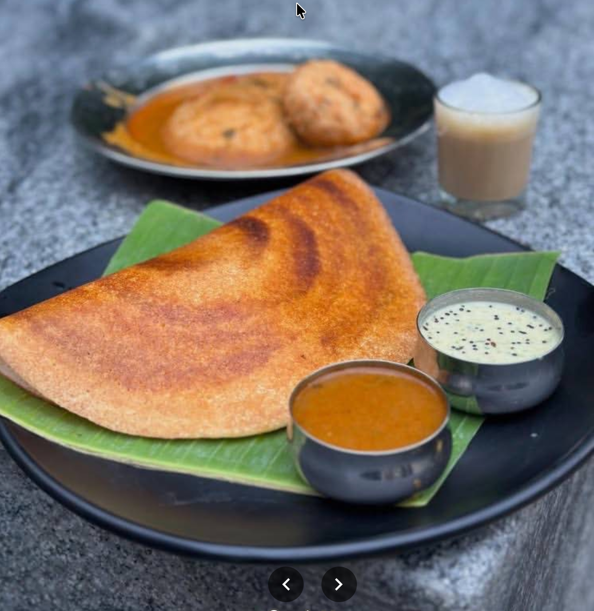
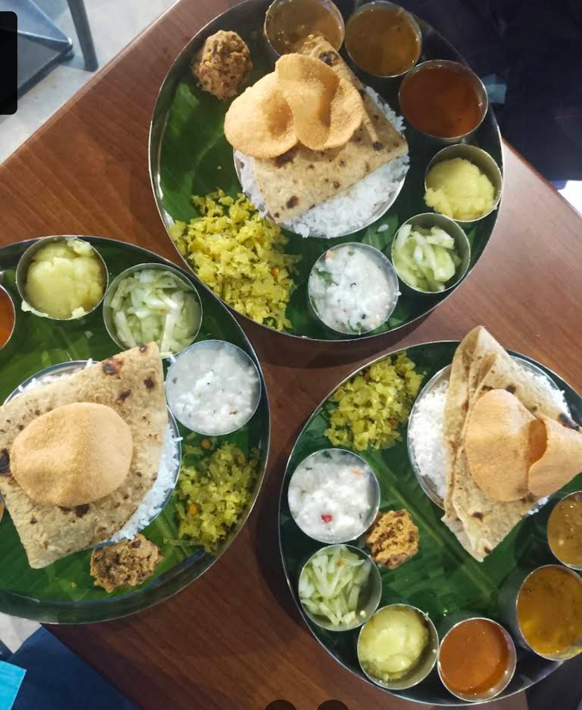
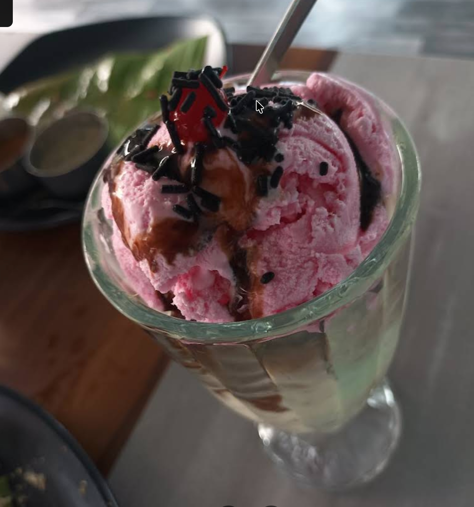

01 / BREAKFAST
South Indian favourites
Idli, dosa and familiar tiffin classics.
The Mayura menu
Explore our vegetarian menu categories, from South Indian breakfast favourites to snacks, meals and a comforting cup of tea.
Call to check today's menu ↗Item availability and prices can change. Please call the cafe for current details.

Browse by category
Idli, dosa and familiar tiffin classics.

Masala dosa, benne dose and onion dosa.

Mini meals and rice-based options.

Paneer Manchurian, paneer chilli and other savoury bites.

Ice cream and sweet treats.

Tea, coffee and refreshing drink options.
Need exact prices?
Menu items and prices are being confirmed directly with the cafe.